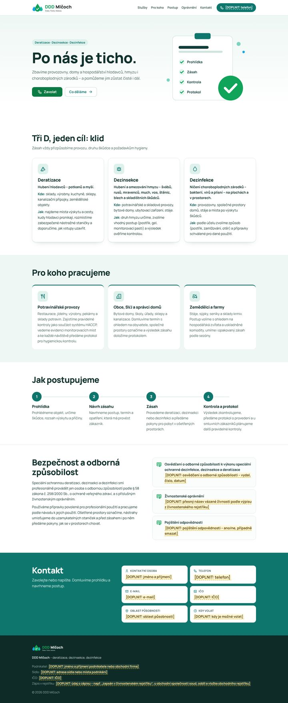
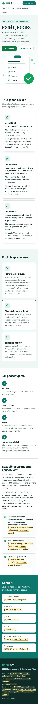
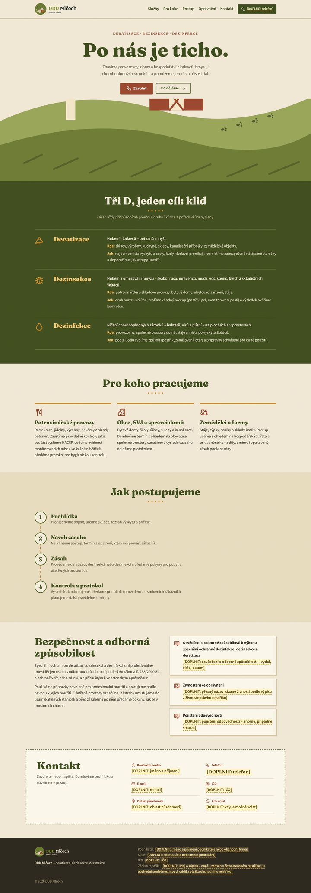
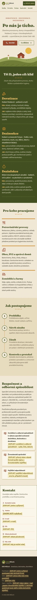
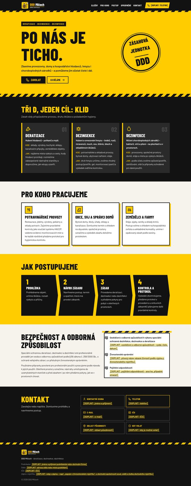
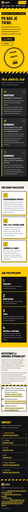
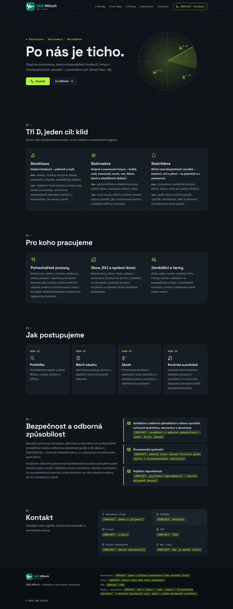
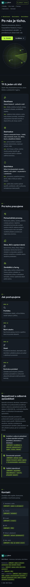
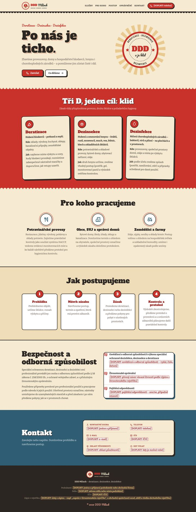
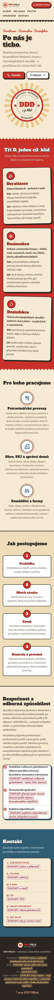

1 Prst na ústech
Mlčoch jako „mlčet“: prst na ústech říká „pst“ a slogan „Po nás je ticho.“ slibuje, že škůdce už nikdo neuslyší.
Samotná značka:32 px a 64 px
DDD Mlčoch · pracovní návrhy
Každé logo je ukázané na světlém i tmavém pozadí. Samotná značka (obrázek bez textu) je ve velikosti ikonky prohlížeče – 32 px a 64 px.
Mlčoch jako „mlčet“: prst na ústech říká „pst“ a slogan „Po nás je ticho.“ slibuje, že škůdce už nikdo neuslyší.
Zvuková vlna, která se uklidní do rovné čáry – škůdci zmlknou. Vtip je tichý a technický, hodí se k seriózní firmě.
Myš sama drží cedulku „PSST“ – i ona ví, že u Mlčocha se nedělá hluk. Slogan „Psst… už jsou pryč.“
Cvrček, který jinak cvrká celou noc, sladce usnul (zZ). „I cvrček ztichl.“
Myš si sbalila kufřík a odchází za humna – škůdci se stěhují, nikomu se nic nestalo.
Sympatický pan hubitel s knírem a čepicí mrká z retro odznaku jako ze staré plechové cedule.
Brouk mává bílou vlajkou – škůdci kapitulují. Pod názvem výstražná páska.
Tři stopy ve tvaru písmene D odcházejí z kruhu – v jedné značce je DDD i odchod škůdců.
Tři kapky jsou tři D, prostřední s odškrtnutím. Slogan „Čisto. Ticho. Hotovo.“ nenápadně hraje na jméno.
Písmeno D má ucho, očko, vousky a ocásek. Slogan „Myš? Jen v logu.“
Náhledy ukazují celou stránku – dají se posouvat. Po otevření návrhu najdeš vlevo dole panel „Vyzkoušet logo: 1–10“.
Hodně bílé, tyrkysová a svěží zelená, úhledné karty jako v laboratoři. Působí jako spolehlivý partner pro potravinářské provozy a kontroly HACCP.
Výchozí logo: č. 9 · v návrhu jde přepnout na kterékoli z 10 log.
Otevřít celý návrh (můžeš v něm přepínat loga)

Papírová textura, olivová a okrová, patkové písmo a kreslená krajina se statkem. Vlídný a usedlý – míří hlavně na farmy a obce.
Výchozí logo: č. 5 · v návrhu jde přepnout na kterékoli z 10 log.
Otevřít celý návrh (můžeš v něm přepínat loga)

Žlutá a černá jako výstražná páska, velké úzké písmo a razítko „zásahová jednotka“. Rázný a nepřehlédnutelný.
Výchozí logo: č. 7 · v návrhu jde přepnout na kterékoli z 10 log.
Otevřít celý návrh (můžeš v něm přepínat loga)

Antracitové pozadí s jemnou mřížkou, jedna limetková barva a „radar“ v úvodu. Precizní a moderní.
Výchozí logo: č. 2 · v návrhu jde přepnout na kterékoli z 10 log.
Otevřít celý návrh (můžeš v něm přepínat loga)

Krémová a červená, nálepky s tlustým obrysem a odznak s paprsky ve stylu 50. let. Poctivé řemeslo, snadno zapamatovatelné.
Výchozí logo: č. 6 · v návrhu jde přepnout na kterékoli z 10 log.
Otevřít celý návrh (můžeš v něm přepínat loga)
